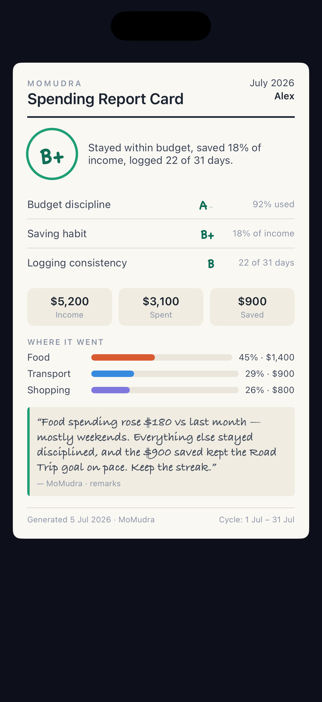

MoMudra
Built alone, end to end: the app, the AI layer, and the backend that keeps the keys off the device.

- Role
- Solo — app, AI layer, backend
- Shipped
- v1.0.0 · 30 July 2026
- Platform
- iOS 18+
- Stack
- SwiftUI · SwiftData · StoreKit 2
- AI
- Claude + Groq, routed
- Backend
- Cloudflare Workers + KV
The problem
Almost every budgeting app assumes a calendar month. Most people are not paid on the first. If your salary lands on the 25th, a “monthly” budget quietly lies to you for six days out of every thirty — it resets while your money hasn’t.
And when the money does run short, these apps hand you a chart. A chart is not an answer. The question people actually have is “why am I broke this month?”, and that is a question, not a visualisation.
The decisions
One cycle-scoped accessor
Derived once, scoped to the pay cycle. Home, the widget and every AI answer call it; nothing re-derives it.
Config-driven provider routing
Claude primary, Groq fallback, behind one shared protocol. Order comes from Worker KV rather than the binary, so it changes without a release.
One self-heal retry
A total failure forces a fresh config pull and rebuilds the chain before any error reaches the user.
Truncated replies rejected
A token-limit stop reason throws instead of caching. The response cache is keyed on a hash of the full final prompt.
Position-free response parsing
Finds the answer block rather than assuming its index, with a regression test pinned to a reasoning block arriving first.
Keys server-side only
Vendor credentials are Cloudflare Worker secrets. The app authenticates to the Worker; the Worker authenticates to the vendor.
Failure copy without alarm
Plain wording, the question stays retryable, and errors are never fed back into the model as conversation.
Real renewal state
Reads the subscription renewal info rather than inferring from an expiry date, which a cancelled plan also has.
The result
- 30 Jul 2026Shipped
- SoloBuilt by
- iOS 18+Requires
Shipped solo to the App Store as v1.0.0 on 30 July 2026 — the SwiftUI app, the AI layer, and the Cloudflare Worker backend.
Too recently released for usage data worth reporting. What it already proves is narrower and more useful: one person can carry a product from SwiftUI view to Cloudflare secret without a team behind them.